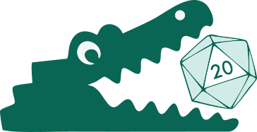
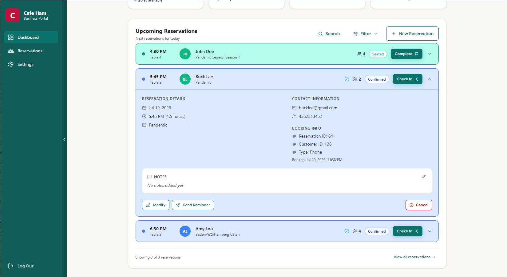
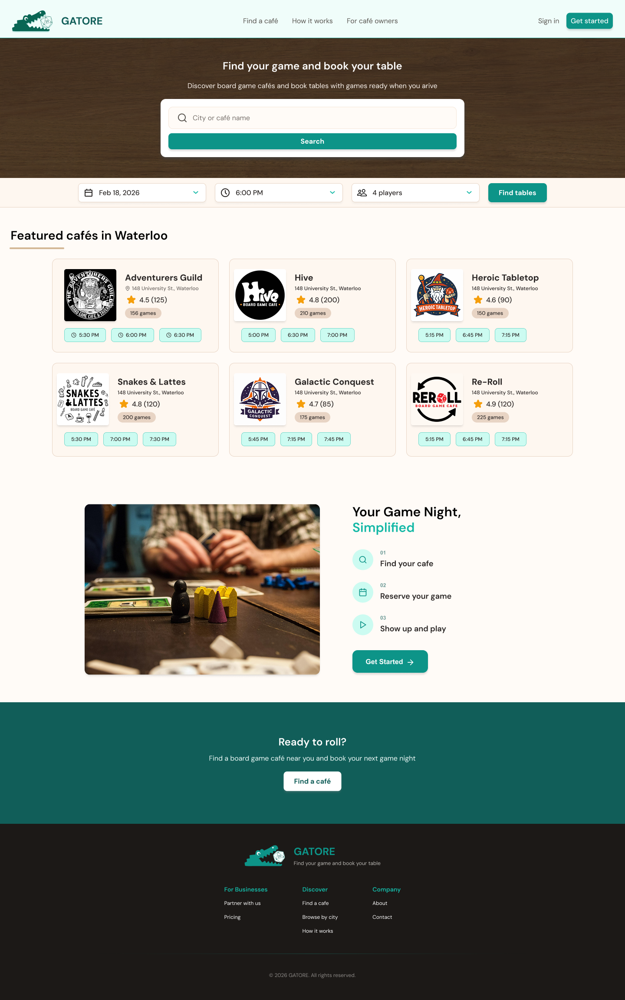
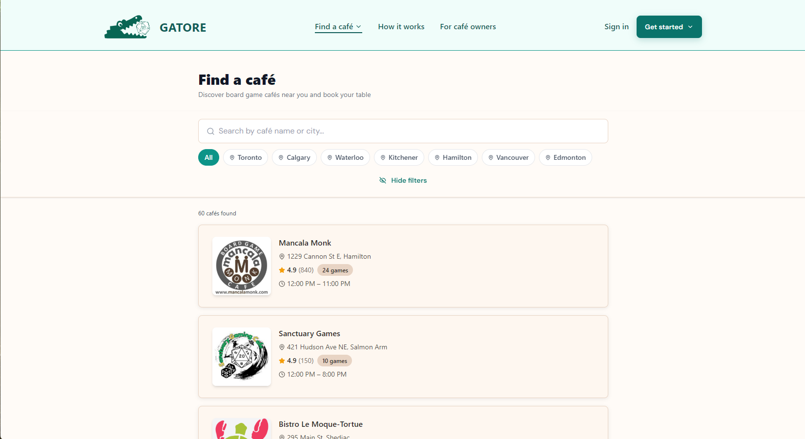
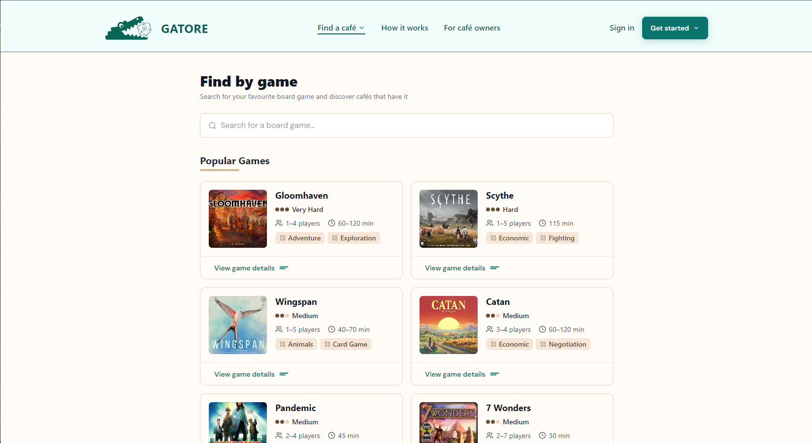
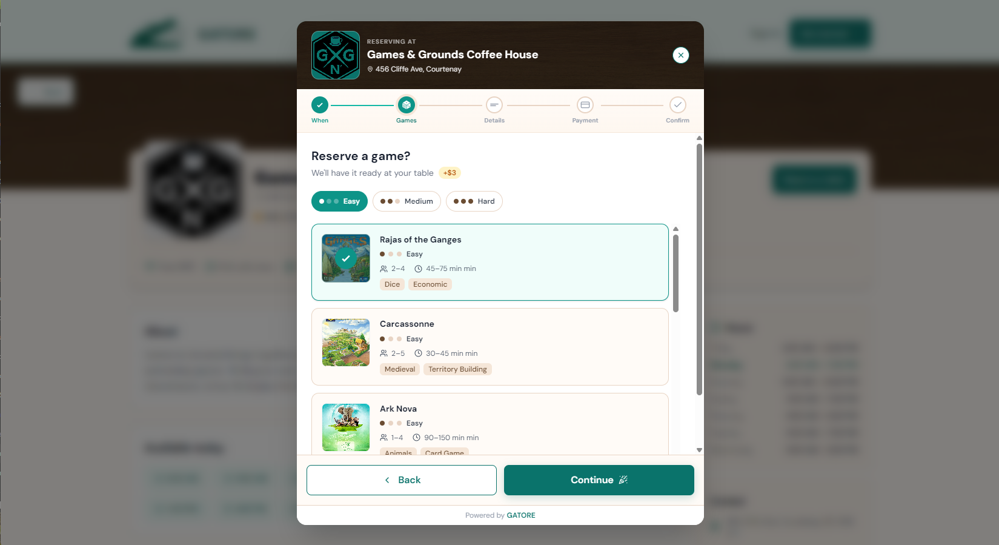
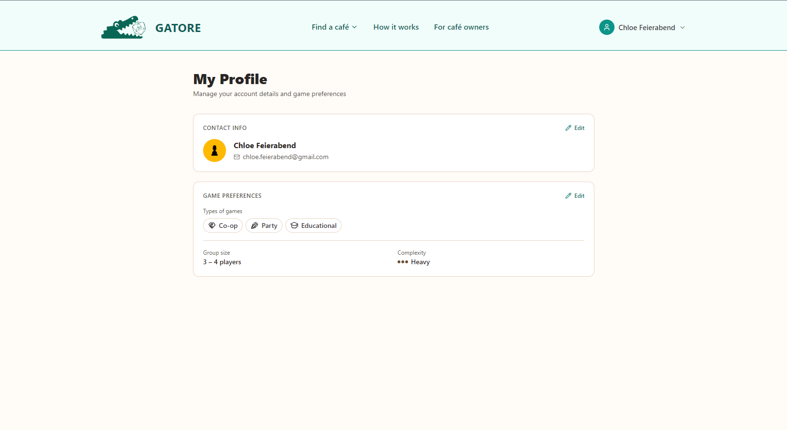
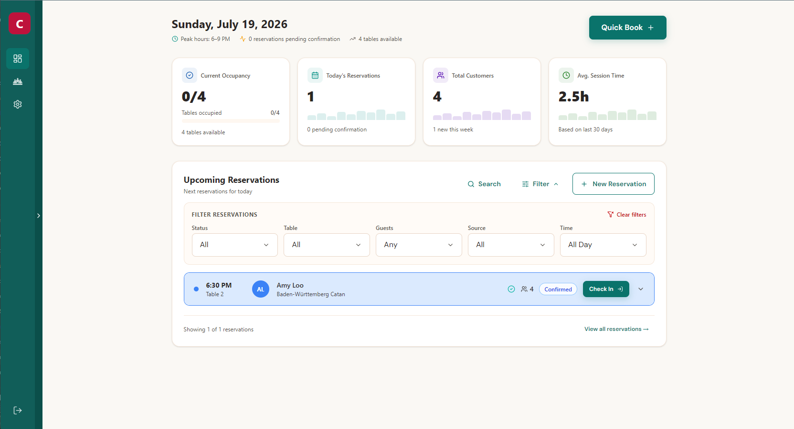
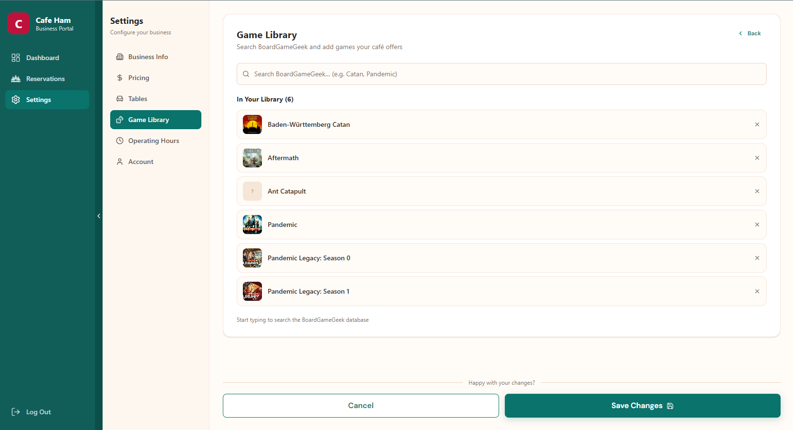
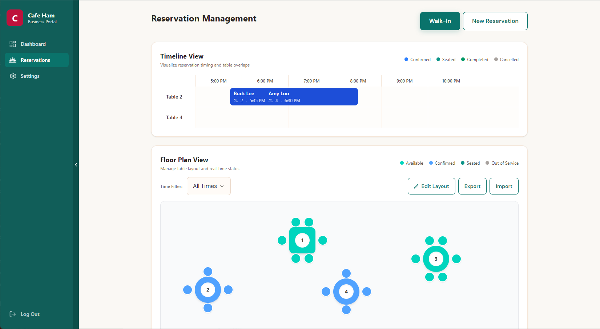

Reservations
Customers can browse café listings, check availability, and book a table — with game preferences built into the booking flow.
The reservation and game library platform built for board game
cafés.
Filling a gap that off-the-shelf software couldn't.

Board game cafés are a growing category of hospitality business — but no dedicated software exists for how they actually operate. Generic reservation tools don't account for game libraries. Generic library tools don't handle table bookings. Café owners were cobbling together mismatched systems, and customers had no unified way to discover venues, check game availability, or connect with others to play.
Design and build a purpose-built platform for board game cafés: one product that handles everything on the customer side (discovery, reservations, social matchmaking, personalized recommendations) and everything on the business side (café management, game catalog, reservations dashboard).
GATORE is a two-sided platform — one product serving two distinct audiences with different needs, different mental models, and different success metrics.
Customers can browse café listings, check availability, and book a table — with game preferences built into the booking flow.
Discover new cafés and connect with other players looking for a group. GATORE helps you find people to play with, not just a place to play.
Customers build a profile, track their play history across visits, and receive personalized game recommendations based on what they've played and enjoyed.
Café owners get a dedicated dashboard to manage their venue — reservations, game library catalog, and café-side operations — all in one place.

The hardest design challenge on GATORE was serving two very different audiences within a single product. A customer discovering a new café thinks nothing like an owner managing a Saturday night rush.
That meant two separate design contexts — different information architecture, different interaction patterns, and different definitions of success for each side.
GATORE's name is a play on "alligator," which made green the obvious starting point — but a literal reptile green would have felt cold and corporate. Teal was chosen instead: it carries the green association while feeling approachable and modern. Warm beige and browns pair it to the board game café setting, giving the brand a cozy, welcoming feel over a sterile one.
The design system had to flex across both sides of the product. Customer-facing screens prioritize warmth, discovery, and delight. Business-facing screens prioritize clarity, density, and efficiency. The same tokens — color, type, spacing — served both contexts.
Built with: React + TypeScript + Tailwind v4 + Node.js
GATORE placed second in the Conestoga College capstone program at the final demo day — validating the design and product direction in front of an external audience.
Leading design from competitive research through full-stack build — across two distinct user surfaces — reinforced how design decisions ripple into development, and vice versa.
Building a shared design system that served both a customer discovery experience and a business management tool was a meaningful systems design challenge at real product scale.


Competitive analysis identifying the gap in board game café software







